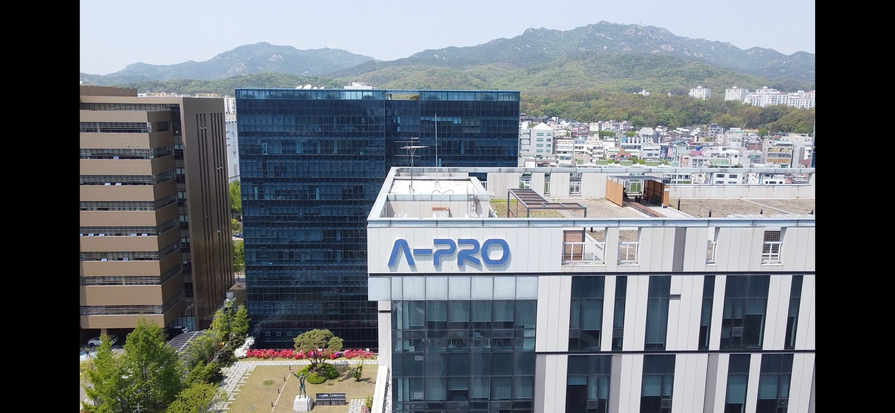

A-PRO CULTURE
구성원이 자부심을 갖고 성장할 수 있는
‘일하기 좋은 일터’
에이프로는 구성원이 자부심을 갖고 성장할 수 있는 ‘일하기 좋은 일터’를 기반으로, 고객과 사회가 함께 신뢰할 수 있는 기업이 되고자 합니다. 사람이 성장해야 기술이 자라고, 기술이 자라야 미래 에너지가 만들어진다고 믿습니다.

THE BEST ELECTRICAL ENGINEERING SOLUTION PROVIDER
공정 장비의 통합 설계 능력을 바탕으로 지속 성장 기반 구축
ABOUT
A-PRO
회사소개
A-PRO는 이차전지 제조 공정의 핵심 장비를 글로벌 시장에 공급하는 에너지 솔루션 전문기업입니다.
독자적인 전력변환 및 정밀 제어 기술을 기반으로 전기자동차와 e-Mobility 등 다양한 배터리 응용 분야에 최적화된 통합 솔루션을 제공합니다.
A-PRO는 고효율 전력변환 기술, 사용자 중심의 설계 역량, 축적된 생산 노하우와 체계적인 사후관리 시스템을 바탕으로 고객의 생산성과 품질 경쟁력을 높이고 있습니다. 앞으로도 첨단 전력변환·제어계측 기술을 지속적으로 고도화하여, 글로벌 친환경 에너지 산업의 성장을 선도하는 기업으로 도약하겠습니다.
COMPANY
OVERVIEW
기업 현황
코스닥 상장
2020.07.16
업력
26년
2000.06.27 설립
대표이사
임종현
임직원
270명
자본금
72.3억 원
매출액
1,416.2억 원
2025년
3년 평균 매출액
1,944.3억 원
수출 비중
80% 이상
VISION
2030
비전
Global Top5,
Total Energy-Solution Provider
에이프로는 이차전지 제조 설비 공급 기업을 넘어, 에너지를 만들고 저장하고 쓰는 전 과정을 아우르는 종합 에너지 솔루션 기업을 목표로 합니다.
충·방전 전력변환 기술을 축으로 에너지 저장 장치(ESS), 전기자동차 충전·제어 플랫폼, 화합물 전력 반도체까지 사업을 연결해 2030년 글로벌 Top 5 수준의 기술 경쟁력을 갖추고자 합니다.
BRAND
IDENTITY
A-PRO 의 의미
AAA
STRATEGY
기업 전략
STRATEGY 01
ICON전력변환·계측·자동화를 한 팀에서 통합 설계하는 능력으로 공정 전체의 성능을 끌어올립니다. 축적한 기술을 다음 사업의 출발점으로 삼아 앞선 기준을 만듭니다.
STRATEGY 02
ICON검증된 시장에 머무르지 않고 에너지 인프라, 인공지능 플랫폼, 화합물 전력 반도체처럼 새로 열리는 영역에 먼저 들어가 자리를 만듭니다.
STRATEGY 03
ICON고객의 생산 일정과 조건은 매번 다릅니다. 설계부터 양산까지의 과정을 짧게 잡아 요구가 바뀌는 속도에 맞춰 대응합니다.
A-PRO CULTURE
에이프로는 구성원이 자부심을 갖고 성장할 수 있는 ‘일하기 좋은 일터’를 기반으로, 고객과 사회가 함께 신뢰할 수 있는 기업이 되고자 합니다. 사람이 성장해야 기술이 자라고, 기술이 자라야 미래 에너지가 만들어진다고 믿습니다.